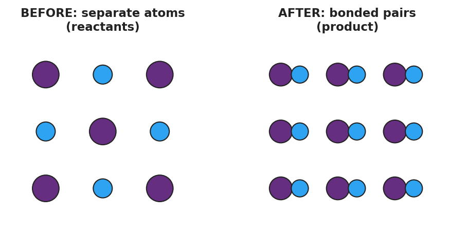

01 Phenomenon
Your teacher pours two colorless liquids together. In Cup 1 — silver nitrate solution plus sodium chloride solution — a cloudy white solid appears the instant they touch. In Cup 2 — sodium chloride solution plus potassium nitrate solution — the liquids mix and nothing happens; the cup stays perfectly clear. Same kind of action, two completely different outcomes.
02 Driving question
Why do some pairs of chemicals react the moment they are mixed, while other pairs do not react at all?
03 Notice & wonder
| I notice… | I wonder… |
|---|---|
Turn & Talk #1: In Cup 1 a white solid appeared. In Cup 2 nothing did. If atoms cannot be created or destroyed, where did the white solid’s atoms come from — and in Cup 2, where did the atoms go?
04 Initial model
Before your teacher explains anything, write your best guess: when two substances react, what happens to the atoms? Draw or describe what you think is happening to the particles in Cup 1 (where a solid forms) versus Cup 2 (where nothing forms).
| Draw / describe the particles | |
|---|---|
| Cup 1 (a solid forms) | |
| Cup 2 (no change) |
05 Investigate
Part 1 — Reaction-Type Stations
You will visit five stations. At each one, record what you observe and the reactant formulas, then sort the reaction into a family based on its pattern — what goes in, what comes out, and what changes about the partners. You decide the families and name them yourself; the official names come later.
The figure below shows what happens to the atoms in one of these reactions: separate atoms regroup into bonded pairs. The atoms are rearranged, never created or destroyed.

| Station | What I observe | Reactant formulas | My family name + rule |
|---|---|---|---|
| 1 | |||
| 2 | |||
| 3 | |||
| 4 | |||
| 5 |
My families: After the gallery walk, how many different reaction families did your class agree on? Write each family name and its one-line rule.
Part 2 — Precipitation Tray
Combine small volumes of the ionic solutions in the well tray as directed. Record which combinations form a solid (precipitate) and which stay clear.
| Combination | Solid forms? (✓ / ✗) | What you see |
|---|---|---|
| AgNO₃ + NaCl | ||
| AgNO₃ + KNO₃ | ||
| Pb(NO₃)₂ + KI | ||
| NaCl + KNO₃ |
Key question: All four combinations swap partners (a double-replacement pattern). Why do some form a solid and others stay clear?
06 Make it make sense
For each reaction below, (i) classify it into one of the five types and (ii) explain how the pattern tells you the type.
2 Na + Cl₂ → 2 NaCl
- Type: _______________________________________________
- The pattern that tells me: _______________________________________________
2 HgO → 2 Hg + O₂
- Type: _______________________________________________
- The pattern that tells me: _______________________________________________
Mg + 2 AgNO₃ → Mg(NO₃)₂ + 2 Ag
- Type: _______________________________________________
- The pattern that tells me: _______________________________________________
C₃H₈ + 5 O₂ → 3 CO₂ + 4 H₂O
- Type: _______________________________________________
- The pattern that tells me: _______________________________________________
Predict the products of this double-replacement reaction by swapping partners (you do not need to balance it):
Pb(NO₃)₂ + 2 KI → ______ + ______
- Which product is the solid (precipitate)? _______________________________________________
07 Key vocabulary
- synthesis reaction
- a reaction in which two or more substances combine to form a single product (pattern A + B → AB), such as 2 Mg + O₂ → 2 MgO; the reverse of a decomposition reaction
- decomposition reaction
- a reaction in which a single compound breaks apart into two or more simpler substances (pattern AB → A + B), such as 2 H₂O₂ → 2 H₂O + O₂; the reverse of a synthesis reaction
- combustion reaction
- a reaction in which a fuel (often a hydrocarbon) burns in oxygen to produce carbon dioxide and water, such as CH₄ + 2 O₂ → CO₂ + 2 H₂O; releases energy as heat and light
Use each term in a sentence about today’s stations or the two-cup phenomenon. Do not just copy the definition — use the word to describe something you observed or classified.
synthesis reaction: _______________________________________________ _______________________________________________
decomposition reaction: _______________________________________________ _______________________________________________
combustion reaction: _______________________________________________ _______________________________________________
08 Revise your model
Return to your Initial Model of Cup 1 and Cup 2. Revise it: both cups are double-replacement reactions (two compounds swapping partners). Add to your drawing which new combination forms in each cup, and circle the one that cannot stay dissolved.
Then finish this Because / But / So sentence:
Cup 1 forms a white solid but Cup 2 stays clear because __________________________________________, but __________________________________________, so __________________________________________.
09 Exit ticket
- Classify this reaction by type and explain how you know:
2 Al + 3 CuCl₂ → 2 AlCl₃ + 3 Cu
Type: _________________ — how I know: _______________________________
- Classify this reaction by type and explain how you know:
2 KClO₃ → 2 KCl + 3 O₂
Type: _________________ — how I know: _______________________________
- In one sentence, use the idea of a pattern to explain why silver nitrate plus sodium chloride formed a white solid but sodium chloride plus potassium nitrate did not.
10 Explore further
- Reaction-type stations lab (5 reactions, classify each): Five numbered stations, each a safe demonstration or short student procedure illustrating one reaction family — (1) steel wool + oxygen / Mg ribbon burn (synthesis); (2) electrolysis or thermal decomposition of a carbonate, or H₂O₂ decomposition with a catalyst (decomposition); (3) zinc + hydrochloric acid producing hydrogen bubbles (single replacement); (4) silver nitrate + sodium chloride forming a white precipitate (double replacement); (5) a tealight / candle burning (combustion). At each station, students record what they observe, write the reactant formulas, and classify the reaction into one of the five types using the pattern, *before* the formal vocabulary is named.
- Precipitation reaction tray: A spot plate or well tray in which students combine small volumes of several ionic solutions (e.g., NaCl, KI, Na₂CO₃ against AgNO₃, Pb(NO₃)₂, CaCl₂) and record which combinations form a solid (precipitate) and which stay clear. This builds the double-replacement pattern empirically and previews solubility rules. No external URL is required; a Javalab "chemical reactions" or "precipitation" simulation can stand in if reagents are unavailable.